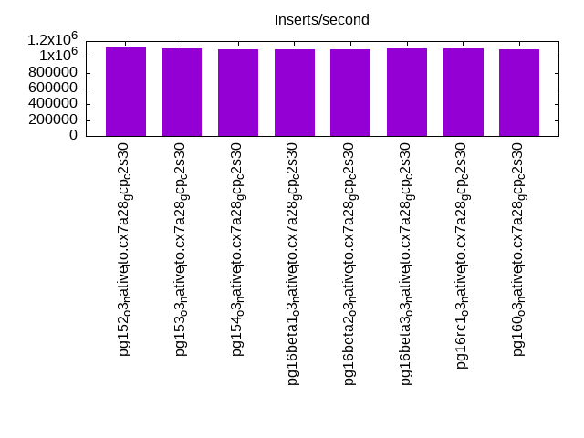
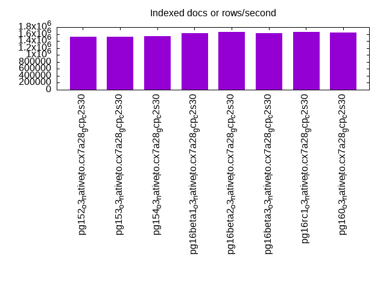
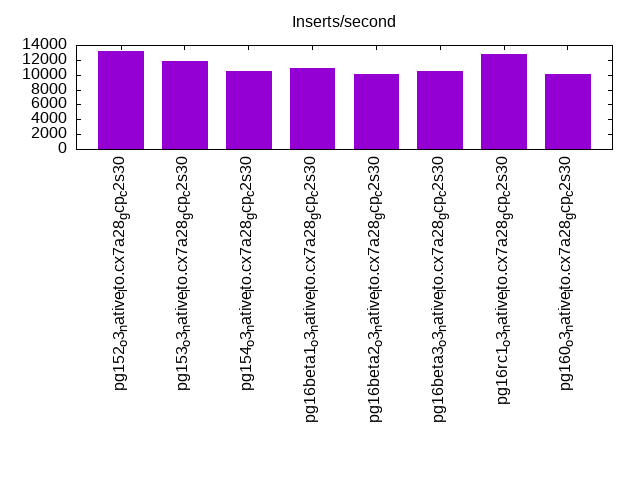
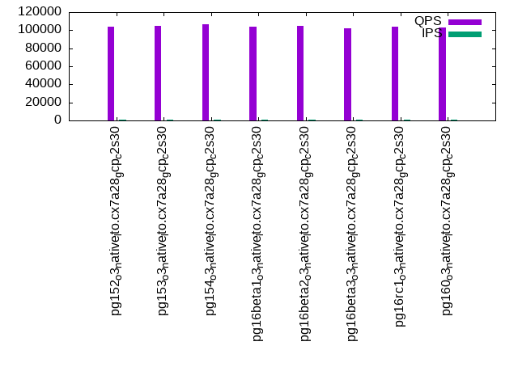
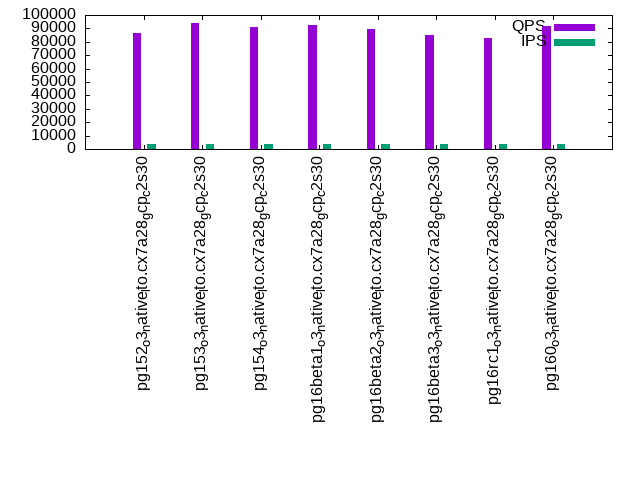
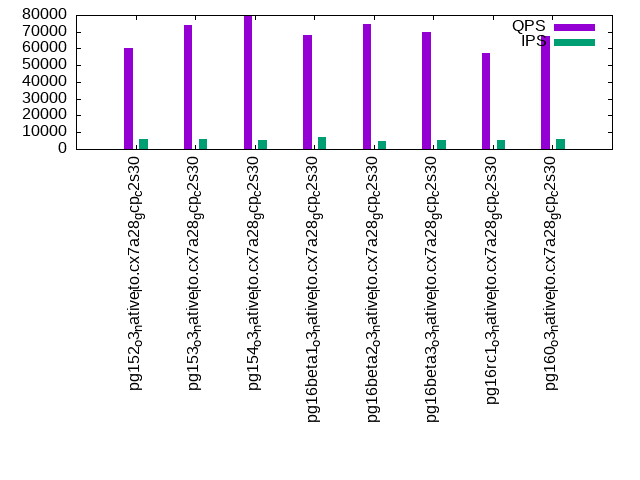

This is a report for the insert benchmark with 4000M docs and 8 client(s). It is generated by scripts (bash, awk, sed) and Tufte might not be impressed. An overview of the insert benchmark is here and a short update is here. Below, by DBMS, I mean DBMS+version.config. An example is my8020.c10b40 where my means MySQL, 8020 is version 8.0.20 and c10b40 is the name for the configuration file.
The test server is a c2-standard-30 with 15 cores, hyperthreads disabled, 120G RAM and XFS with SW RAID 0 across 4 NVMe SSD. The benchmark was run with 8 clients and there were 1 or 3 connections per client (1 for queries or inserts without rate limits, 1+1 for rate limited inserts+deletes). It uses 8 tables, 1 per client. It loads 500M rows per table without secondary indexes, creates secondary indexes, then inserts 60M rows per table with a delete per insert to avoid growing the table. It then does 3 read+write tests for 7200s each that do queries as fast as possible with 100, 500 and then 1000 inserts/second/client concurrent with the queries. There are also deletes to match the inserts and avoid growing the table. The database is larger than memory. Clients and the DBMS share one server. The per-database configs are in the per-database subdirectories here.
The tested DBMS are:
The numbers are inserts/s for l.i0 and l.i1, indexed docs (or rows) /s for l.x and queries/s for q*.2. The values are the average rate over the entire test for inserts (IPS) and queries (QPS). The range of values for IPS and QPS is split into 3 parts: bottom 25%, middle 50%, top 25%. Values in the bottom 25% have a red background, values in the top 25% have a green background and values in the middle have no color. A gray background is used for values that can be ignored because the DBMS did not sustain the target insert rate. Red backgrounds are not used when the minimum value is within 80% of the max value.
| dbms | l.i0 | l.x | l.i1 | q100.1 | q500.1 | q1000.1 |
|---|---|---|---|---|---|---|
| pg152_o3_native_lto.cx7a28_gcp_c2s30 | 1121076 | 1529675 | 13232 | 103698 | 86321 | 60529 |
| pg153_o3_native_lto.cx7a28_gcp_c2s30 | 1107726 | 1522108 | 11910 | 104849 | 94240 | 73961 |
| pg154_o3_native_lto.cx7a28_gcp_c2s30 | 1094092 | 1546829 | 10464 | 106504 | 90672 | 79373 |
| pg16beta1_o3_native_lto.cx7a28_gcp_c2s30 | 1092598 | 1626057 | 10866 | 103881 | 92306 | 68307 |
| pg16beta2_o3_native_lto.cx7a28_gcp_c2s30 | 1098298 | 1662552 | 10077 | 104484 | 89502 | 74568 |
| pg16beta3_o3_native_lto.cx7a28_gcp_c2s30 | 1105583 | 1631362 | 10481 | 102381 | 85287 | 70070 |
| pg16rc1_o3_native_lto.cx7a28_gcp_c2s30 | 1110802 | 1654301 | 12777 | 103690 | 83122 | 57132 |
| pg160_o3_native_lto.cx7a28_gcp_c2s30 | 1094092 | 1646132 | 10157 | 103388 | 92147 | 67567 |
This table has relative throughput, throughput for the DBMS relative to the DBMS in the first line, using the absolute throughput from the previous table. Values less than 0.95 have a yellow background. Values greater than 1.05 have a blue background.
| dbms | l.i0 | l.x | l.i1 | q100.1 | q500.1 | q1000.1 |
|---|---|---|---|---|---|---|
| pg152_o3_native_lto.cx7a28_gcp_c2s30 | 1.00 | 1.00 | 1.00 | 1.00 | 1.00 | 1.00 |
| pg153_o3_native_lto.cx7a28_gcp_c2s30 | 0.99 | 1.00 | 0.90 | 1.01 | 1.09 | 1.22 |
| pg154_o3_native_lto.cx7a28_gcp_c2s30 | 0.98 | 1.01 | 0.79 | 1.03 | 1.05 | 1.31 |
| pg16beta1_o3_native_lto.cx7a28_gcp_c2s30 | 0.97 | 1.06 | 0.82 | 1.00 | 1.07 | 1.13 |
| pg16beta2_o3_native_lto.cx7a28_gcp_c2s30 | 0.98 | 1.09 | 0.76 | 1.01 | 1.04 | 1.23 |
| pg16beta3_o3_native_lto.cx7a28_gcp_c2s30 | 0.99 | 1.07 | 0.79 | 0.99 | 0.99 | 1.16 |
| pg16rc1_o3_native_lto.cx7a28_gcp_c2s30 | 0.99 | 1.08 | 0.97 | 1.00 | 0.96 | 0.94 |
| pg160_o3_native_lto.cx7a28_gcp_c2s30 | 0.98 | 1.08 | 0.77 | 1.00 | 1.07 | 1.12 |
This lists the average rate of inserts/s for the tests that do inserts concurrent with queries. For such tests the query rate is listed in the table above. The read+write tests are setup so that the insert rate should match the target rate every second. Cells that are not at least 95% of the target have a red background to indicate a failure to satisfy the target.
| dbms | q100.1 | q500.1 | q1000.1 |
|---|---|---|---|
| pg152_o3_native_lto.cx7a28_gcp_c2s30 | 798 | 3992 | 5880 |
| pg153_o3_native_lto.cx7a28_gcp_c2s30 | 798 | 3992 | 5735 |
| pg154_o3_native_lto.cx7a28_gcp_c2s30 | 798 | 3992 | 5135 |
| pg16beta1_o3_native_lto.cx7a28_gcp_c2s30 | 798 | 3992 | 7059 |
| pg16beta2_o3_native_lto.cx7a28_gcp_c2s30 | 798 | 3992 | 5074 |
| pg16beta3_o3_native_lto.cx7a28_gcp_c2s30 | 798 | 3992 | 5124 |
| pg16rc1_o3_native_lto.cx7a28_gcp_c2s30 | 798 | 3992 | 5666 |
| pg160_o3_native_lto.cx7a28_gcp_c2s30 | 798 | 3992 | 5734 |
| target | 800 | 4000 | 8000 |
l.i0: load without secondary indexes. Graphs for performance per 1-second interval are here.
Average throughput:
Insert response time histogram: each cell has the percentage of responses that take <= the time in the header and max is the max response time in seconds. For the max column values in the top 25% of the range have a red background and in the bottom 25% of the range have a green background. The red background is not used when the min value is within 80% of the max value.
| dbms | 256us | 1ms | 4ms | 16ms | 64ms | 256ms | 1s | 4s | 16s | gt | max |
|---|---|---|---|---|---|---|---|---|---|---|---|
| pg152_o3_native_lto.cx7a28_gcp_c2s30 | 97.114 | 2.845 | 0.028 | 0.007 | 0.004 | 0.001 | 0.538 | ||||
| pg153_o3_native_lto.cx7a28_gcp_c2s30 | 97.313 | 2.649 | 0.027 | 0.007 | 0.004 | 0.001 | 0.525 | ||||
| pg154_o3_native_lto.cx7a28_gcp_c2s30 | 97.409 | 2.548 | 0.028 | 0.009 | 0.005 | 0.001 | 0.696 | ||||
| pg16beta1_o3_native_lto.cx7a28_gcp_c2s30 | 97.286 | 2.670 | 0.030 | 0.009 | 0.004 | 0.001 | 0.466 | ||||
| pg16beta2_o3_native_lto.cx7a28_gcp_c2s30 | 97.373 | 2.592 | 0.026 | 0.006 | 0.003 | nonzero | 0.416 | ||||
| pg16beta3_o3_native_lto.cx7a28_gcp_c2s30 | 97.232 | 2.718 | 0.031 | 0.013 | 0.005 | 0.001 | nonzero | 1.448 | |||
| pg16rc1_o3_native_lto.cx7a28_gcp_c2s30 | 97.412 | 2.547 | 0.028 | 0.008 | 0.004 | nonzero | 0.811 | ||||
| pg160_o3_native_lto.cx7a28_gcp_c2s30 | 97.377 | 2.584 | 0.027 | 0.006 | 0.005 | 0.001 | 0.690 |
Performance metrics for the DBMS listed above. Some are normalized by throughput, others are not. Legend for results is here.
ips qps rps rmbps wps wmbps rpq rkbpq wpi wkbpi csps cpups cspq cpupq dbgb1 dbgb2 rss maxop p50 p99 tag 1121076 0 546 4.3 1463.9 284.8 0.000 0.004 0.001 0.260 91873 85.0 0.082 11 382.7 414.8 7.9 0.538 144039 77132 4000m.pg152_o3_native_lto.cx7a28_gcp_c2s30 1107726 0 543 4.3 1469.1 285.9 0.000 0.004 0.001 0.264 91485 85.0 0.083 12 382.7 414.8 6.4 0.525 141938 72521 4000m.pg153_o3_native_lto.cx7a28_gcp_c2s30 1094092 0 547 4.3 1440.5 277.8 0.000 0.004 0.001 0.260 92312 84.1 0.084 12 382.7 414.8 5.0 0.696 140647 65629 4000m.pg154_o3_native_lto.cx7a28_gcp_c2s30 1092598 0 544 4.3 1452.6 281.8 0.000 0.004 0.001 0.264 90976 84.4 0.083 12 382.7 414.8 9.9 0.466 140248 74218 4000m.pg16beta1_o3_native_lto.cx7a28_gcp_c2s30 1098298 0 551 4.3 1442.3 279.2 0.001 0.004 0.001 0.260 91909 84.7 0.084 12 382.7 414.8 3.9 0.416 140447 86706 4000m.pg16beta2_o3_native_lto.cx7a28_gcp_c2s30 1105583 0 546 4.3 1457.7 284.1 0.000 0.004 0.001 0.263 91339 84.4 0.083 11 382.7 414.8 7.9 1.448 142345 64730 4000m.pg16beta3_o3_native_lto.cx7a28_gcp_c2s30 1110802 0 546 4.3 1460.8 284.5 0.000 0.004 0.001 0.262 92094 84.9 0.083 11 382.7 414.8 9.6 0.811 142246 79114 4000m.pg16rc1_o3_native_lto.cx7a28_gcp_c2s30 1094092 0 534 4.2 1446.3 277.9 0.000 0.004 0.001 0.260 91996 84.4 0.084 12 382.7 414.8 4.5 0.690 140347 67227 4000m.pg160_o3_native_lto.cx7a28_gcp_c2s30
l.x: create secondary indexes.
Average throughput:
Performance metrics for the DBMS listed above. Some are normalized by throughput, others are not. Legend for results is here.
ips qps rps rmbps wps wmbps rpq rkbpq wpi wkbpi csps cpups cspq cpupq dbgb1 dbgb2 rss maxop p50 p99 tag 1529675 0 3573 734.0 1315.6 285.2 0.002 0.491 0.001 0.191 35450 35.1 0.023 3 735.2 767.0 56.8 0.002 NA NA 4000m.pg152_o3_native_lto.cx7a28_gcp_c2s30 1522108 0 3594 743.5 1294.0 285.6 0.002 0.500 0.001 0.192 35959 34.6 0.024 3 735.2 767.0 56.9 0.002 NA NA 4000m.pg153_o3_native_lto.cx7a28_gcp_c2s30 1546829 0 3613 745.9 1321.9 291.1 0.002 0.494 0.001 0.193 34858 34.8 0.023 3 735.2 767.0 57.2 0.002 NA NA 4000m.pg154_o3_native_lto.cx7a28_gcp_c2s30 1626057 0 2910 650.5 1377.7 307.8 0.002 0.410 0.001 0.194 45051 36.2 0.028 3 735.2 767.2 56.8 0.002 NA NA 4000m.pg16beta1_o3_native_lto.cx7a28_gcp_c2s30 1662552 0 2902 653.1 1413.5 315.6 0.002 0.402 0.001 0.194 44054 36.5 0.026 3 735.2 767.1 56.7 0.002 NA NA 4000m.pg16beta2_o3_native_lto.cx7a28_gcp_c2s30 1631362 0 2897 648.5 1387.0 312.8 0.002 0.407 0.001 0.196 44184 36.1 0.027 3 735.2 767.2 56.7 0.002 NA NA 4000m.pg16beta3_o3_native_lto.cx7a28_gcp_c2s30 1654301 0 2879 650.5 1394.8 313.9 0.002 0.403 0.001 0.194 44489 36.3 0.027 3 735.2 767.2 56.8 0.002 NA NA 4000m.pg16rc1_o3_native_lto.cx7a28_gcp_c2s30 1646132 0 2845 649.4 1400.8 312.2 0.002 0.404 0.001 0.194 43392 36.4 0.026 3 735.2 767.0 57.0 0.027 NA NA 4000m.pg160_o3_native_lto.cx7a28_gcp_c2s30
l.i1: continue load after secondary indexes created. Graphs for performance per 1-second interval are here.
Average throughput:
Insert response time histogram: each cell has the percentage of responses that take <= the time in the header and max is the max response time in seconds. For the max column values in the top 25% of the range have a red background and in the bottom 25% of the range have a green background. The red background is not used when the min value is within 80% of the max value.
| dbms | 256us | 1ms | 4ms | 16ms | 64ms | 256ms | 1s | 4s | 16s | gt | max |
|---|---|---|---|---|---|---|---|---|---|---|---|
| pg152_o3_native_lto.cx7a28_gcp_c2s30 | 30.695 | 47.324 | 21.911 | 0.068 | 0.003 | nonzero | 1.241 | ||||
| pg153_o3_native_lto.cx7a28_gcp_c2s30 | 52.231 | 28.301 | 19.429 | 0.036 | 0.003 | nonzero | 1.463 | ||||
| pg154_o3_native_lto.cx7a28_gcp_c2s30 | 41.984 | 37.245 | 20.725 | 0.044 | 0.001 | nonzero | 1.546 | ||||
| pg16beta1_o3_native_lto.cx7a28_gcp_c2s30 | 44.757 | 34.801 | 20.387 | 0.052 | 0.002 | 0.803 | |||||
| pg16beta2_o3_native_lto.cx7a28_gcp_c2s30 | 47.915 | 33.137 | 18.871 | 0.076 | 0.002 | nonzero | 1.316 | ||||
| pg16beta3_o3_native_lto.cx7a28_gcp_c2s30 | 50.419 | 30.719 | 18.796 | 0.065 | 0.002 | nonzero | 1.155 | ||||
| pg16rc1_o3_native_lto.cx7a28_gcp_c2s30 | 36.041 | 42.691 | 21.187 | 0.078 | 0.002 | nonzero | 1.162 | ||||
| pg160_o3_native_lto.cx7a28_gcp_c2s30 | 58.391 | 26.671 | 14.872 | 0.064 | 0.002 | nonzero | 1.017 |
Delete response time histogram: each cell has the percentage of responses that take <= the time in the header and max is the max response time in seconds. For the max column values in the top 25% of the range have a red background and in the bottom 25% of the range have a green background. The red background is not used when the min value is within 80% of the max value.
| dbms | 256us | 1ms | 4ms | 16ms | 64ms | 256ms | 1s | 4s | 16s | gt | max |
|---|---|---|---|---|---|---|---|---|---|---|---|
| pg152_o3_native_lto.cx7a28_gcp_c2s30 | 71.565 | 2.995 | 0.911 | 2.886 | 9.371 | 12.046 | 0.226 | 0.615 | |||
| pg153_o3_native_lto.cx7a28_gcp_c2s30 | 74.442 | 2.078 | 0.707 | 2.575 | 7.937 | 12.171 | 0.090 | nonzero | 1.022 | ||
| pg154_o3_native_lto.cx7a28_gcp_c2s30 | 74.205 | 2.617 | 0.658 | 2.274 | 9.413 | 10.825 | 0.007 | 0.520 | |||
| pg16beta1_o3_native_lto.cx7a28_gcp_c2s30 | 71.824 | 4.034 | 1.028 | 3.241 | 10.021 | 9.736 | 0.116 | 0.581 | |||
| pg16beta2_o3_native_lto.cx7a28_gcp_c2s30 | 73.262 | 4.446 | 0.567 | 1.836 | 7.565 | 12.226 | 0.098 | 0.777 | |||
| pg16beta3_o3_native_lto.cx7a28_gcp_c2s30 | 75.352 | 3.728 | 0.492 | 1.727 | 7.371 | 11.321 | 0.008 | 0.601 | |||
| pg16rc1_o3_native_lto.cx7a28_gcp_c2s30 | 70.858 | 3.870 | 0.493 | 1.692 | 10.647 | 12.438 | 0.002 | 0.458 | |||
| pg160_o3_native_lto.cx7a28_gcp_c2s30 | 76.342 | 1.408 | 0.666 | 2.112 | 7.509 | 11.770 | 0.192 | 0.893 |
Performance metrics for the DBMS listed above. Some are normalized by throughput, others are not. Legend for results is here.
ips qps rps rmbps wps wmbps rpq rkbpq wpi wkbpi csps cpups cspq cpupq dbgb1 dbgb2 rss maxop p50 p99 tag 13232 0 10482 124.8 21520.6 358.8 0.792 9.662 1.626 27.768 28006 42.2 2.117 478 780.9 813.0 56.6 1.241 649 400 4000m.pg152_o3_native_lto.cx7a28_gcp_c2s30 11910 0 7217 86.9 16055.6 292.6 0.606 7.472 1.348 25.153 20809 39.0 1.747 491 782.6 814.7 70.6 1.463 549 350 4000m.pg153_o3_native_lto.cx7a28_gcp_c2s30 10464 0 7671 91.8 15703.2 275.4 0.733 8.987 1.501 26.947 20875 33.9 1.995 486 785.2 817.3 67.8 1.546 2448 200 4000m.pg154_o3_native_lto.cx7a28_gcp_c2s30 10866 0 7326 91.4 16156.2 277.8 0.674 8.616 1.487 26.176 20628 33.5 1.898 462 777.9 810.0 70.3 0.803 1149 200 4000m.pg16beta1_o3_native_lto.cx7a28_gcp_c2s30 10077 0 6559 82.4 13919.1 264.9 0.651 8.372 1.381 26.919 18522 34.5 1.838 514 789.6 821.7 58.7 1.316 849 499 4000m.pg16beta2_o3_native_lto.cx7a28_gcp_c2s30 10481 0 6562 79.2 14182.9 268.1 0.626 7.737 1.353 26.193 18673 31.1 1.782 445 784.5 816.6 68.9 1.155 499 350 4000m.pg16beta3_o3_native_lto.cx7a28_gcp_c2s30 12777 0 9706 113.0 19989.6 340.0 0.760 9.058 1.565 27.247 26201 38.8 2.051 456 780.7 812.8 70.9 1.162 749 499 4000m.pg16rc1_o3_native_lto.cx7a28_gcp_c2s30 10157 0 5275 67.4 12426.0 249.6 0.519 6.792 1.223 25.166 16020 29.7 1.577 439 784.8 816.8 70.5 1.017 200 150 4000m.pg160_o3_native_lto.cx7a28_gcp_c2s30
q100.1: range queries with 100 insert/s per client. Graphs for performance per 1-second interval are here.
Average throughput:
Query response time histogram: each cell has the percentage of responses that take <= the time in the header and max is the max response time in seconds. For max values in the top 25% of the range have a red background and in the bottom 25% of the range have a green background. The red background is not used when the min value is within 80% of the max value.
| dbms | 256us | 1ms | 4ms | 16ms | 64ms | 256ms | 1s | 4s | 16s | gt | max |
|---|---|---|---|---|---|---|---|---|---|---|---|
| pg152_o3_native_lto.cx7a28_gcp_c2s30 | 99.898 | 0.101 | 0.001 | nonzero | nonzero | nonzero | 0.072 | ||||
| pg153_o3_native_lto.cx7a28_gcp_c2s30 | 99.902 | 0.097 | 0.001 | nonzero | nonzero | nonzero | 0.240 | ||||
| pg154_o3_native_lto.cx7a28_gcp_c2s30 | 99.902 | 0.097 | 0.001 | nonzero | nonzero | nonzero | 0.180 | ||||
| pg16beta1_o3_native_lto.cx7a28_gcp_c2s30 | 99.916 | 0.083 | 0.001 | nonzero | nonzero | nonzero | 0.142 | ||||
| pg16beta2_o3_native_lto.cx7a28_gcp_c2s30 | 99.893 | 0.106 | 0.001 | nonzero | nonzero | nonzero | 0.065 | ||||
| pg16beta3_o3_native_lto.cx7a28_gcp_c2s30 | 99.886 | 0.113 | 0.001 | nonzero | nonzero | nonzero | 0.133 | ||||
| pg16rc1_o3_native_lto.cx7a28_gcp_c2s30 | 99.912 | 0.087 | 0.001 | nonzero | nonzero | nonzero | 0.141 | ||||
| pg160_o3_native_lto.cx7a28_gcp_c2s30 | 99.880 | 0.119 | 0.001 | nonzero | nonzero | nonzero | 0.152 |
Insert response time histogram: each cell has the percentage of responses that take <= the time in the header and max is the max response time in seconds. For max values in the top 25% of the range have a red background and in the bottom 25% of the range have a green background. The red background is not used when the min value is within 80% of the max value.
| dbms | 256us | 1ms | 4ms | 16ms | 64ms | 256ms | 1s | 4s | 16s | gt | max |
|---|---|---|---|---|---|---|---|---|---|---|---|
| pg152_o3_native_lto.cx7a28_gcp_c2s30 | 26.701 | 73.289 | 0.010 | 0.168 | |||||||
| pg153_o3_native_lto.cx7a28_gcp_c2s30 | 0.249 | 26.753 | 72.989 | 0.006 | 0.003 | 0.312 | |||||
| pg154_o3_native_lto.cx7a28_gcp_c2s30 | 2.176 | 21.989 | 75.832 | 0.003 | 0.075 | ||||||
| pg16beta1_o3_native_lto.cx7a28_gcp_c2s30 | 1.218 | 18.288 | 80.488 | 0.005 | 0.001 | 0.397 | |||||
| pg16beta2_o3_native_lto.cx7a28_gcp_c2s30 | 4.428 | 12.394 | 83.175 | 0.003 | 0.072 | ||||||
| pg16beta3_o3_native_lto.cx7a28_gcp_c2s30 | 2.439 | 16.645 | 80.909 | 0.007 | 0.111 | ||||||
| pg16rc1_o3_native_lto.cx7a28_gcp_c2s30 | 2.854 | 20.484 | 76.658 | 0.003 | 0.153 | ||||||
| pg160_o3_native_lto.cx7a28_gcp_c2s30 | 0.398 | 18.644 | 80.946 | 0.011 | 0.086 |
Delete response time histogram: each cell has the percentage of responses that take <= the time in the header and max is the max response time in seconds. For max values in the top 25% of the range have a red background and in the bottom 25% of the range have a green background. The red background is not used when the min value is within 80% of the max value.
| dbms | 256us | 1ms | 4ms | 16ms | 64ms | 256ms | 1s | 4s | 16s | gt | max |
|---|---|---|---|---|---|---|---|---|---|---|---|
| pg152_o3_native_lto.cx7a28_gcp_c2s30 | 29.447 | 23.995 | 11.462 | 22.533 | 12.563 | 0.057 | |||||
| pg153_o3_native_lto.cx7a28_gcp_c2s30 | 40.579 | 27.175 | 17.924 | 14.317 | 0.004 | 0.020 | |||||
| pg154_o3_native_lto.cx7a28_gcp_c2s30 | 39.342 | 27.777 | 17.061 | 15.815 | 0.005 | 0.025 | |||||
| pg16beta1_o3_native_lto.cx7a28_gcp_c2s30 | 31.410 | 25.569 | 22.406 | 20.607 | 0.008 | 0.024 | |||||
| pg16beta2_o3_native_lto.cx7a28_gcp_c2s30 | 36.299 | 30.667 | 16.444 | 16.586 | 0.005 | 0.021 | |||||
| pg16beta3_o3_native_lto.cx7a28_gcp_c2s30 | 31.831 | 22.773 | 16.046 | 16.846 | 12.503 | 0.001 | 0.083 | ||||
| pg16rc1_o3_native_lto.cx7a28_gcp_c2s30 | 46.854 | 29.552 | 5.736 | 5.358 | 12.499 | 0.001 | 0.086 | ||||
| pg160_o3_native_lto.cx7a28_gcp_c2s30 | 30.747 | 25.500 | 11.155 | 20.067 | 12.531 | 0.001 | 0.076 |
Performance metrics for the DBMS listed above. Some are normalized by throughput, others are not. Legend for results is here.
ips qps rps rmbps wps wmbps rpq rkbpq wpi wkbpi csps cpups cspq cpupq dbgb1 dbgb2 rss maxop p50 p99 tag 798 103698 1379 11.6 1864.2 26.1 0.013 0.114 2.335 33.456 397881 53.7 3.837 78 781.1 813.2 70.9 0.072 12935 12375 4000m.pg152_o3_native_lto.cx7a28_gcp_c2s30 798 104849 1365 11.4 1870.0 25.6 0.013 0.111 2.342 32.838 402327 53.2 3.837 76 782.8 814.9 70.9 0.240 13121 7608 4000m.pg153_o3_native_lto.cx7a28_gcp_c2s30 798 106504 1413 11.8 1829.6 25.3 0.013 0.114 2.292 32.439 408625 53.2 3.837 75 785.3 817.3 70.9 0.180 13367 12999 4000m.pg154_o3_native_lto.cx7a28_gcp_c2s30 798 103881 1363 11.4 1874.0 25.1 0.013 0.112 2.347 32.234 398677 53.3 3.838 77 778.2 810.3 70.9 0.142 12866 12178 4000m.pg16beta1_o3_native_lto.cx7a28_gcp_c2s30 798 104484 1425 11.9 1858.4 25.8 0.014 0.117 2.328 33.128 401017 53.2 3.838 76 789.7 821.7 70.9 0.065 13079 8970 4000m.pg16beta2_o3_native_lto.cx7a28_gcp_c2s30 798 102381 1422 11.9 1868.3 25.8 0.014 0.119 2.341 33.149 392966 53.6 3.838 79 784.6 816.6 70.9 0.133 12850 8007 4000m.pg16beta3_o3_native_lto.cx7a28_gcp_c2s30 798 103690 1377 11.6 1877.9 25.5 0.013 0.115 2.353 32.698 397823 53.9 3.837 78 780.9 813.0 70.9 0.141 12946 10425 4000m.pg16rc1_o3_native_lto.cx7a28_gcp_c2s30 798 103388 1444 12.1 1846.0 25.8 0.014 0.120 2.312 33.146 396733 53.6 3.837 78 784.9 816.9 70.9 0.152 12882 12626 4000m.pg160_o3_native_lto.cx7a28_gcp_c2s30
q500.1: range queries with 500 insert/s per client. Graphs for performance per 1-second interval are here.
Average throughput:
Query response time histogram: each cell has the percentage of responses that take <= the time in the header and max is the max response time in seconds. For max values in the top 25% of the range have a red background and in the bottom 25% of the range have a green background. The red background is not used when the min value is within 80% of the max value.
| dbms | 256us | 1ms | 4ms | 16ms | 64ms | 256ms | 1s | 4s | 16s | gt | max |
|---|---|---|---|---|---|---|---|---|---|---|---|
| pg152_o3_native_lto.cx7a28_gcp_c2s30 | 99.868 | 0.129 | 0.003 | 0.001 | nonzero | 0.027 | |||||
| pg153_o3_native_lto.cx7a28_gcp_c2s30 | 99.866 | 0.129 | 0.003 | 0.001 | nonzero | 0.028 | |||||
| pg154_o3_native_lto.cx7a28_gcp_c2s30 | 99.859 | 0.138 | 0.002 | 0.001 | nonzero | 0.028 | |||||
| pg16beta1_o3_native_lto.cx7a28_gcp_c2s30 | 99.849 | 0.146 | 0.004 | 0.001 | nonzero | 0.027 | |||||
| pg16beta2_o3_native_lto.cx7a28_gcp_c2s30 | 99.839 | 0.158 | 0.003 | 0.001 | nonzero | 0.028 | |||||
| pg16beta3_o3_native_lto.cx7a28_gcp_c2s30 | 99.823 | 0.173 | 0.003 | 0.001 | nonzero | 0.027 | |||||
| pg16rc1_o3_native_lto.cx7a28_gcp_c2s30 | 99.850 | 0.147 | 0.002 | 0.001 | nonzero | 0.027 | |||||
| pg160_o3_native_lto.cx7a28_gcp_c2s30 | 99.858 | 0.136 | 0.004 | 0.001 | nonzero | 0.032 |
Insert response time histogram: each cell has the percentage of responses that take <= the time in the header and max is the max response time in seconds. For max values in the top 25% of the range have a red background and in the bottom 25% of the range have a green background. The red background is not used when the min value is within 80% of the max value.
| dbms | 256us | 1ms | 4ms | 16ms | 64ms | 256ms | 1s | 4s | 16s | gt | max |
|---|---|---|---|---|---|---|---|---|---|---|---|
| pg152_o3_native_lto.cx7a28_gcp_c2s30 | 18.771 | 81.228 | nonzero | 0.102 | |||||||
| pg153_o3_native_lto.cx7a28_gcp_c2s30 | 19.583 | 80.416 | 0.001 | 0.135 | |||||||
| pg154_o3_native_lto.cx7a28_gcp_c2s30 | 24.995 | 75.005 | 0.056 | ||||||||
| pg16beta1_o3_native_lto.cx7a28_gcp_c2s30 | 15.242 | 84.758 | nonzero | 0.070 | |||||||
| pg16beta2_o3_native_lto.cx7a28_gcp_c2s30 | 9.494 | 90.505 | 0.001 | 0.075 | |||||||
| pg16beta3_o3_native_lto.cx7a28_gcp_c2s30 | 16.663 | 83.335 | 0.002 | 0.081 | |||||||
| pg16rc1_o3_native_lto.cx7a28_gcp_c2s30 | 14.553 | 85.445 | 0.001 | 0.070 | |||||||
| pg160_o3_native_lto.cx7a28_gcp_c2s30 | 22.405 | 77.594 | 0.002 | 0.089 |
Delete response time histogram: each cell has the percentage of responses that take <= the time in the header and max is the max response time in seconds. For max values in the top 25% of the range have a red background and in the bottom 25% of the range have a green background. The red background is not used when the min value is within 80% of the max value.
| dbms | 256us | 1ms | 4ms | 16ms | 64ms | 256ms | 1s | 4s | 16s | gt | max |
|---|---|---|---|---|---|---|---|---|---|---|---|
| pg152_o3_native_lto.cx7a28_gcp_c2s30 | 57.606 | 7.994 | 0.096 | 5.653 | 27.767 | 0.884 | 0.091 | ||||
| pg153_o3_native_lto.cx7a28_gcp_c2s30 | 34.679 | 6.998 | 0.185 | 8.902 | 49.191 | 0.045 | 0.085 | ||||
| pg154_o3_native_lto.cx7a28_gcp_c2s30 | 53.067 | 7.935 | 0.154 | 7.480 | 31.365 | 0.051 | |||||
| pg16beta1_o3_native_lto.cx7a28_gcp_c2s30 | 37.141 | 8.836 | 0.182 | 9.970 | 43.863 | 0.008 | 0.077 | ||||
| pg16beta2_o3_native_lto.cx7a28_gcp_c2s30 | 55.916 | 10.452 | 0.161 | 7.285 | 26.186 | 0.055 | |||||
| pg16beta3_o3_native_lto.cx7a28_gcp_c2s30 | 41.764 | 8.375 | 0.154 | 7.140 | 38.368 | 4.199 | 0.112 | ||||
| pg16rc1_o3_native_lto.cx7a28_gcp_c2s30 | 67.136 | 8.033 | 0.138 | 2.802 | 14.635 | 7.256 | 0.113 | ||||
| pg160_o3_native_lto.cx7a28_gcp_c2s30 | 20.662 | 6.882 | 0.122 | 9.142 | 60.292 | 2.901 | 0.117 |
Performance metrics for the DBMS listed above. Some are normalized by throughput, others are not. Legend for results is here.
ips qps rps rmbps wps wmbps rpq rkbpq wpi wkbpi csps cpups cspq cpupq dbgb1 dbgb2 rss maxop p50 p99 tag 3992 86321 5880 47.6 10356.4 132.2 0.068 0.565 2.595 33.904 331144 61.0 3.836 106 782.4 814.5 70.9 0.027 10357 9717 4000m.pg152_o3_native_lto.cx7a28_gcp_c2s30 3992 94240 5897 47.7 10233.2 131.0 0.063 0.518 2.564 33.597 329653 64.1 3.498 102 783.9 816.0 0.5 0.028 11699 10165 4000m.pg153_o3_native_lto.cx7a28_gcp_c2s30 3992 90672 5907 47.9 10246.8 131.8 0.065 0.541 2.567 33.801 343621 61.0 3.790 101 785.5 817.6 70.9 0.028 11571 9813 4000m.pg154_o3_native_lto.cx7a28_gcp_c2s30 3992 92306 5873 47.5 10381.5 131.5 0.064 0.527 2.600 33.728 331215 62.7 3.588 102 780.1 812.1 70.9 0.027 11475 10069 4000m.pg16beta1_o3_native_lto.cx7a28_gcp_c2s30 3992 89502 5918 48.0 10267.1 132.9 0.066 0.550 2.572 34.089 341505 60.1 3.816 101 789.9 822.0 70.9 0.028 11299 9669 4000m.pg16beta2_o3_native_lto.cx7a28_gcp_c2s30 3992 85287 5893 47.8 10311.1 132.5 0.069 0.573 2.583 33.999 311037 64.1 3.647 113 785.0 817.1 70.9 0.027 10441 9482 4000m.pg16beta3_o3_native_lto.cx7a28_gcp_c2s30 3992 83122 5883 47.7 10431.1 131.1 0.071 0.588 2.613 33.617 323629 61.6 3.893 111 782.1 814.1 70.9 0.027 10133 9577 4000m.pg16rc1_o3_native_lto.cx7a28_gcp_c2s30 3992 92147 5902 47.8 10298.9 133.0 0.064 0.532 2.580 34.124 307816 67.3 3.340 110 785.4 817.4 70.9 0.032 11369 10293 4000m.pg160_o3_native_lto.cx7a28_gcp_c2s30
q1000.1: range queries with 1000 insert/s per client. Graphs for performance per 1-second interval are here.
Average throughput:
Query response time histogram: each cell has the percentage of responses that take <= the time in the header and max is the max response time in seconds. For max values in the top 25% of the range have a red background and in the bottom 25% of the range have a green background. The red background is not used when the min value is within 80% of the max value.
| dbms | 256us | 1ms | 4ms | 16ms | 64ms | 256ms | 1s | 4s | 16s | gt | max |
|---|---|---|---|---|---|---|---|---|---|---|---|
| pg152_o3_native_lto.cx7a28_gcp_c2s30 | 99.711 | 0.285 | 0.003 | 0.001 | nonzero | 0.028 | |||||
| pg153_o3_native_lto.cx7a28_gcp_c2s30 | 99.683 | 0.311 | 0.005 | 0.001 | nonzero | 0.036 | |||||
| pg154_o3_native_lto.cx7a28_gcp_c2s30 | 99.775 | 0.218 | 0.006 | 0.001 | nonzero | 0.032 | |||||
| pg16beta1_o3_native_lto.cx7a28_gcp_c2s30 | 99.675 | 0.319 | 0.004 | 0.001 | nonzero | 0.028 | |||||
| pg16beta2_o3_native_lto.cx7a28_gcp_c2s30 | 99.728 | 0.266 | 0.005 | 0.001 | nonzero | 0.028 | |||||
| pg16beta3_o3_native_lto.cx7a28_gcp_c2s30 | 99.675 | 0.320 | 0.004 | 0.001 | nonzero | 0.046 | |||||
| pg16rc1_o3_native_lto.cx7a28_gcp_c2s30 | 99.703 | 0.293 | 0.003 | 0.001 | nonzero | 0.058 | |||||
| pg160_o3_native_lto.cx7a28_gcp_c2s30 | 99.691 | 0.302 | 0.006 | 0.001 | nonzero | 0.036 |
Insert response time histogram: each cell has the percentage of responses that take <= the time in the header and max is the max response time in seconds. For max values in the top 25% of the range have a red background and in the bottom 25% of the range have a green background. The red background is not used when the min value is within 80% of the max value.
| dbms | 256us | 1ms | 4ms | 16ms | 64ms | 256ms | 1s | 4s | 16s | gt | max |
|---|---|---|---|---|---|---|---|---|---|---|---|
| pg152_o3_native_lto.cx7a28_gcp_c2s30 | nonzero | 11.878 | 88.120 | 0.001 | 0.122 | ||||||
| pg153_o3_native_lto.cx7a28_gcp_c2s30 | 22.964 | 77.036 | 0.001 | 0.123 | |||||||
| pg154_o3_native_lto.cx7a28_gcp_c2s30 | 39.580 | 60.419 | 0.001 | 0.081 | |||||||
| pg16beta1_o3_native_lto.cx7a28_gcp_c2s30 | 9.823 | 90.177 | nonzero | 0.070 | |||||||
| pg16beta2_o3_native_lto.cx7a28_gcp_c2s30 | 29.870 | 70.127 | 0.003 | 0.136 | |||||||
| pg16beta3_o3_native_lto.cx7a28_gcp_c2s30 | 25.254 | 74.743 | 0.002 | 0.091 | |||||||
| pg16rc1_o3_native_lto.cx7a28_gcp_c2s30 | 0.330 | 13.497 | 86.173 | 0.001 | 0.115 | ||||||
| pg160_o3_native_lto.cx7a28_gcp_c2s30 | 21.629 | 78.365 | 0.006 | 0.094 |
Delete response time histogram: each cell has the percentage of responses that take <= the time in the header and max is the max response time in seconds. For max values in the top 25% of the range have a red background and in the bottom 25% of the range have a green background. The red background is not used when the min value is within 80% of the max value.
| dbms | 256us | 1ms | 4ms | 16ms | 64ms | 256ms | 1s | 4s | 16s | gt | max |
|---|---|---|---|---|---|---|---|---|---|---|---|
| pg152_o3_native_lto.cx7a28_gcp_c2s30 | 66.965 | 22.554 | 0.147 | 0.023 | 1.164 | 9.147 | 0.177 | ||||
| pg153_o3_native_lto.cx7a28_gcp_c2s30 | 50.432 | 19.907 | 0.128 | 0.033 | 6.685 | 22.814 | 0.162 | ||||
| pg154_o3_native_lto.cx7a28_gcp_c2s30 | 44.573 | 15.619 | 0.141 | 0.026 | 12.457 | 27.184 | 0.206 | ||||
| pg16beta1_o3_native_lto.cx7a28_gcp_c2s30 | 64.914 | 24.177 | 0.143 | 0.020 | 6.351 | 4.395 | 0.147 | ||||
| pg16beta2_o3_native_lto.cx7a28_gcp_c2s30 | 44.817 | 23.810 | 0.135 | 0.028 | 4.617 | 26.593 | nonzero | 0.324 | |||
| pg16beta3_o3_native_lto.cx7a28_gcp_c2s30 | 52.125 | 19.486 | 0.129 | 0.028 | 1.839 | 26.393 | 0.202 | ||||
| pg16rc1_o3_native_lto.cx7a28_gcp_c2s30 | 72.021 | 18.287 | 0.144 | 0.024 | 2.179 | 7.345 | 0.153 | ||||
| pg160_o3_native_lto.cx7a28_gcp_c2s30 | 55.086 | 20.747 | 0.127 | 0.024 | 7.659 | 16.357 | 0.208 |
Performance metrics for the DBMS listed above. Some are normalized by throughput, others are not. Legend for results is here.
ips qps rps rmbps wps wmbps rpq rkbpq wpi wkbpi csps cpups cspq cpupq dbgb1 dbgb2 rss maxop p50 p99 tag 5880 60529 8738 71.2 15053.2 192.0 0.144 1.204 2.560 33.439 243176 51.9 4.017 129 785.4 817.4 70.9 0.028 9142 8758 4000m.pg152_o3_native_lto.cx7a28_gcp_c2s30 5735 73961 8424 68.8 14413.1 183.7 0.114 0.953 2.513 32.796 249896 63.2 3.379 128 786.4 818.5 70.9 0.036 10149 8614 4000m.pg153_o3_native_lto.cx7a28_gcp_c2s30 5135 79373 7504 61.5 12935.9 164.9 0.095 0.794 2.519 32.877 231731 62.9 2.920 119 787.0 819.1 70.9 0.032 12370 9478 4000m.pg154_o3_native_lto.cx7a28_gcp_c2s30 7059 68307 10495 85.1 18096.3 228.8 0.154 1.275 2.564 33.194 269206 59.3 3.941 130 784.4 816.5 70.9 0.028 8854 8407 4000m.pg16beta1_o3_native_lto.cx7a28_gcp_c2s30 5074 74568 7425 60.9 12744.2 163.7 0.100 0.837 2.512 33.043 246082 61.8 3.300 124 791.0 823.0 70.9 0.028 10393 8535 4000m.pg16beta2_o3_native_lto.cx7a28_gcp_c2s30 5124 70070 7440 61.0 12882.4 165.6 0.106 0.892 2.514 33.091 241610 60.0 3.448 128 786.7 818.7 70.9 0.046 9929 8503 4000m.pg16beta3_o3_native_lto.cx7a28_gcp_c2s30 5666 57132 8381 68.4 14482.4 181.7 0.147 1.226 2.556 32.840 230832 49.2 4.040 129 785.4 817.5 70.9 0.058 9046 8790 4000m.pg16rc1_o3_native_lto.cx7a28_gcp_c2s30 5734 67567 8488 69.3 14592.5 187.0 0.126 1.050 2.545 33.403 243003 60.0 3.596 133 787.6 819.6 70.9 0.036 8822 8474 4000m.pg160_o3_native_lto.cx7a28_gcp_c2s30
l.i0: load without secondary indexes
Performance metrics for all DBMS, not just the ones listed above. Some are normalized by throughput, others are not. Legend for results is here.
ips qps rps rmbps wps wmbps rpq rkbpq wpi wkbpi csps cpups cspq cpupq dbgb1 dbgb2 rss maxop p50 p99 tag 1121076 0 546 4.3 1463.9 284.8 0.000 0.004 0.001 0.260 91873 85.0 0.082 11 382.7 414.8 7.9 0.538 144039 77132 4000m.pg152_o3_native_lto.cx7a28_gcp_c2s30 1107726 0 543 4.3 1469.1 285.9 0.000 0.004 0.001 0.264 91485 85.0 0.083 12 382.7 414.8 6.4 0.525 141938 72521 4000m.pg153_o3_native_lto.cx7a28_gcp_c2s30 1094092 0 547 4.3 1440.5 277.8 0.000 0.004 0.001 0.260 92312 84.1 0.084 12 382.7 414.8 5.0 0.696 140647 65629 4000m.pg154_o3_native_lto.cx7a28_gcp_c2s30 1092598 0 544 4.3 1452.6 281.8 0.000 0.004 0.001 0.264 90976 84.4 0.083 12 382.7 414.8 9.9 0.466 140248 74218 4000m.pg16beta1_o3_native_lto.cx7a28_gcp_c2s30 1098298 0 551 4.3 1442.3 279.2 0.001 0.004 0.001 0.260 91909 84.7 0.084 12 382.7 414.8 3.9 0.416 140447 86706 4000m.pg16beta2_o3_native_lto.cx7a28_gcp_c2s30 1105583 0 546 4.3 1457.7 284.1 0.000 0.004 0.001 0.263 91339 84.4 0.083 11 382.7 414.8 7.9 1.448 142345 64730 4000m.pg16beta3_o3_native_lto.cx7a28_gcp_c2s30 1110802 0 546 4.3 1460.8 284.5 0.000 0.004 0.001 0.262 92094 84.9 0.083 11 382.7 414.8 9.6 0.811 142246 79114 4000m.pg16rc1_o3_native_lto.cx7a28_gcp_c2s30 1094092 0 534 4.2 1446.3 277.9 0.000 0.004 0.001 0.260 91996 84.4 0.084 12 382.7 414.8 4.5 0.690 140347 67227 4000m.pg160_o3_native_lto.cx7a28_gcp_c2s30
l.x: create secondary indexes
Performance metrics for all DBMS, not just the ones listed above. Some are normalized by throughput, others are not. Legend for results is here.
ips qps rps rmbps wps wmbps rpq rkbpq wpi wkbpi csps cpups cspq cpupq dbgb1 dbgb2 rss maxop p50 p99 tag 1529675 0 3573 734.0 1315.6 285.2 0.002 0.491 0.001 0.191 35450 35.1 0.023 3 735.2 767.0 56.8 0.002 NA NA 4000m.pg152_o3_native_lto.cx7a28_gcp_c2s30 1522108 0 3594 743.5 1294.0 285.6 0.002 0.500 0.001 0.192 35959 34.6 0.024 3 735.2 767.0 56.9 0.002 NA NA 4000m.pg153_o3_native_lto.cx7a28_gcp_c2s30 1546829 0 3613 745.9 1321.9 291.1 0.002 0.494 0.001 0.193 34858 34.8 0.023 3 735.2 767.0 57.2 0.002 NA NA 4000m.pg154_o3_native_lto.cx7a28_gcp_c2s30 1626057 0 2910 650.5 1377.7 307.8 0.002 0.410 0.001 0.194 45051 36.2 0.028 3 735.2 767.2 56.8 0.002 NA NA 4000m.pg16beta1_o3_native_lto.cx7a28_gcp_c2s30 1662552 0 2902 653.1 1413.5 315.6 0.002 0.402 0.001 0.194 44054 36.5 0.026 3 735.2 767.1 56.7 0.002 NA NA 4000m.pg16beta2_o3_native_lto.cx7a28_gcp_c2s30 1631362 0 2897 648.5 1387.0 312.8 0.002 0.407 0.001 0.196 44184 36.1 0.027 3 735.2 767.2 56.7 0.002 NA NA 4000m.pg16beta3_o3_native_lto.cx7a28_gcp_c2s30 1654301 0 2879 650.5 1394.8 313.9 0.002 0.403 0.001 0.194 44489 36.3 0.027 3 735.2 767.2 56.8 0.002 NA NA 4000m.pg16rc1_o3_native_lto.cx7a28_gcp_c2s30 1646132 0 2845 649.4 1400.8 312.2 0.002 0.404 0.001 0.194 43392 36.4 0.026 3 735.2 767.0 57.0 0.027 NA NA 4000m.pg160_o3_native_lto.cx7a28_gcp_c2s30
l.i1: continue load after secondary indexes created
Performance metrics for all DBMS, not just the ones listed above. Some are normalized by throughput, others are not. Legend for results is here.
ips qps rps rmbps wps wmbps rpq rkbpq wpi wkbpi csps cpups cspq cpupq dbgb1 dbgb2 rss maxop p50 p99 tag 13232 0 10482 124.8 21520.6 358.8 0.792 9.662 1.626 27.768 28006 42.2 2.117 478 780.9 813.0 56.6 1.241 649 400 4000m.pg152_o3_native_lto.cx7a28_gcp_c2s30 11910 0 7217 86.9 16055.6 292.6 0.606 7.472 1.348 25.153 20809 39.0 1.747 491 782.6 814.7 70.6 1.463 549 350 4000m.pg153_o3_native_lto.cx7a28_gcp_c2s30 10464 0 7671 91.8 15703.2 275.4 0.733 8.987 1.501 26.947 20875 33.9 1.995 486 785.2 817.3 67.8 1.546 2448 200 4000m.pg154_o3_native_lto.cx7a28_gcp_c2s30 10866 0 7326 91.4 16156.2 277.8 0.674 8.616 1.487 26.176 20628 33.5 1.898 462 777.9 810.0 70.3 0.803 1149 200 4000m.pg16beta1_o3_native_lto.cx7a28_gcp_c2s30 10077 0 6559 82.4 13919.1 264.9 0.651 8.372 1.381 26.919 18522 34.5 1.838 514 789.6 821.7 58.7 1.316 849 499 4000m.pg16beta2_o3_native_lto.cx7a28_gcp_c2s30 10481 0 6562 79.2 14182.9 268.1 0.626 7.737 1.353 26.193 18673 31.1 1.782 445 784.5 816.6 68.9 1.155 499 350 4000m.pg16beta3_o3_native_lto.cx7a28_gcp_c2s30 12777 0 9706 113.0 19989.6 340.0 0.760 9.058 1.565 27.247 26201 38.8 2.051 456 780.7 812.8 70.9 1.162 749 499 4000m.pg16rc1_o3_native_lto.cx7a28_gcp_c2s30 10157 0 5275 67.4 12426.0 249.6 0.519 6.792 1.223 25.166 16020 29.7 1.577 439 784.8 816.8 70.5 1.017 200 150 4000m.pg160_o3_native_lto.cx7a28_gcp_c2s30
q100.1: range queries with 100 insert/s per client
Performance metrics for all DBMS, not just the ones listed above. Some are normalized by throughput, others are not. Legend for results is here.
ips qps rps rmbps wps wmbps rpq rkbpq wpi wkbpi csps cpups cspq cpupq dbgb1 dbgb2 rss maxop p50 p99 tag 798 103698 1379 11.6 1864.2 26.1 0.013 0.114 2.335 33.456 397881 53.7 3.837 78 781.1 813.2 70.9 0.072 12935 12375 4000m.pg152_o3_native_lto.cx7a28_gcp_c2s30 798 104849 1365 11.4 1870.0 25.6 0.013 0.111 2.342 32.838 402327 53.2 3.837 76 782.8 814.9 70.9 0.240 13121 7608 4000m.pg153_o3_native_lto.cx7a28_gcp_c2s30 798 106504 1413 11.8 1829.6 25.3 0.013 0.114 2.292 32.439 408625 53.2 3.837 75 785.3 817.3 70.9 0.180 13367 12999 4000m.pg154_o3_native_lto.cx7a28_gcp_c2s30 798 103881 1363 11.4 1874.0 25.1 0.013 0.112 2.347 32.234 398677 53.3 3.838 77 778.2 810.3 70.9 0.142 12866 12178 4000m.pg16beta1_o3_native_lto.cx7a28_gcp_c2s30 798 104484 1425 11.9 1858.4 25.8 0.014 0.117 2.328 33.128 401017 53.2 3.838 76 789.7 821.7 70.9 0.065 13079 8970 4000m.pg16beta2_o3_native_lto.cx7a28_gcp_c2s30 798 102381 1422 11.9 1868.3 25.8 0.014 0.119 2.341 33.149 392966 53.6 3.838 79 784.6 816.6 70.9 0.133 12850 8007 4000m.pg16beta3_o3_native_lto.cx7a28_gcp_c2s30 798 103690 1377 11.6 1877.9 25.5 0.013 0.115 2.353 32.698 397823 53.9 3.837 78 780.9 813.0 70.9 0.141 12946 10425 4000m.pg16rc1_o3_native_lto.cx7a28_gcp_c2s30 798 103388 1444 12.1 1846.0 25.8 0.014 0.120 2.312 33.146 396733 53.6 3.837 78 784.9 816.9 70.9 0.152 12882 12626 4000m.pg160_o3_native_lto.cx7a28_gcp_c2s30
q500.1: range queries with 500 insert/s per client
Performance metrics for all DBMS, not just the ones listed above. Some are normalized by throughput, others are not. Legend for results is here.
ips qps rps rmbps wps wmbps rpq rkbpq wpi wkbpi csps cpups cspq cpupq dbgb1 dbgb2 rss maxop p50 p99 tag 3992 86321 5880 47.6 10356.4 132.2 0.068 0.565 2.595 33.904 331144 61.0 3.836 106 782.4 814.5 70.9 0.027 10357 9717 4000m.pg152_o3_native_lto.cx7a28_gcp_c2s30 3992 94240 5897 47.7 10233.2 131.0 0.063 0.518 2.564 33.597 329653 64.1 3.498 102 783.9 816.0 0.5 0.028 11699 10165 4000m.pg153_o3_native_lto.cx7a28_gcp_c2s30 3992 90672 5907 47.9 10246.8 131.8 0.065 0.541 2.567 33.801 343621 61.0 3.790 101 785.5 817.6 70.9 0.028 11571 9813 4000m.pg154_o3_native_lto.cx7a28_gcp_c2s30 3992 92306 5873 47.5 10381.5 131.5 0.064 0.527 2.600 33.728 331215 62.7 3.588 102 780.1 812.1 70.9 0.027 11475 10069 4000m.pg16beta1_o3_native_lto.cx7a28_gcp_c2s30 3992 89502 5918 48.0 10267.1 132.9 0.066 0.550 2.572 34.089 341505 60.1 3.816 101 789.9 822.0 70.9 0.028 11299 9669 4000m.pg16beta2_o3_native_lto.cx7a28_gcp_c2s30 3992 85287 5893 47.8 10311.1 132.5 0.069 0.573 2.583 33.999 311037 64.1 3.647 113 785.0 817.1 70.9 0.027 10441 9482 4000m.pg16beta3_o3_native_lto.cx7a28_gcp_c2s30 3992 83122 5883 47.7 10431.1 131.1 0.071 0.588 2.613 33.617 323629 61.6 3.893 111 782.1 814.1 70.9 0.027 10133 9577 4000m.pg16rc1_o3_native_lto.cx7a28_gcp_c2s30 3992 92147 5902 47.8 10298.9 133.0 0.064 0.532 2.580 34.124 307816 67.3 3.340 110 785.4 817.4 70.9 0.032 11369 10293 4000m.pg160_o3_native_lto.cx7a28_gcp_c2s30
q1000.1: range queries with 1000 insert/s per client
Performance metrics for all DBMS, not just the ones listed above. Some are normalized by throughput, others are not. Legend for results is here.
ips qps rps rmbps wps wmbps rpq rkbpq wpi wkbpi csps cpups cspq cpupq dbgb1 dbgb2 rss maxop p50 p99 tag 5880 60529 8738 71.2 15053.2 192.0 0.144 1.204 2.560 33.439 243176 51.9 4.017 129 785.4 817.4 70.9 0.028 9142 8758 4000m.pg152_o3_native_lto.cx7a28_gcp_c2s30 5735 73961 8424 68.8 14413.1 183.7 0.114 0.953 2.513 32.796 249896 63.2 3.379 128 786.4 818.5 70.9 0.036 10149 8614 4000m.pg153_o3_native_lto.cx7a28_gcp_c2s30 5135 79373 7504 61.5 12935.9 164.9 0.095 0.794 2.519 32.877 231731 62.9 2.920 119 787.0 819.1 70.9 0.032 12370 9478 4000m.pg154_o3_native_lto.cx7a28_gcp_c2s30 7059 68307 10495 85.1 18096.3 228.8 0.154 1.275 2.564 33.194 269206 59.3 3.941 130 784.4 816.5 70.9 0.028 8854 8407 4000m.pg16beta1_o3_native_lto.cx7a28_gcp_c2s30 5074 74568 7425 60.9 12744.2 163.7 0.100 0.837 2.512 33.043 246082 61.8 3.300 124 791.0 823.0 70.9 0.028 10393 8535 4000m.pg16beta2_o3_native_lto.cx7a28_gcp_c2s30 5124 70070 7440 61.0 12882.4 165.6 0.106 0.892 2.514 33.091 241610 60.0 3.448 128 786.7 818.7 70.9 0.046 9929 8503 4000m.pg16beta3_o3_native_lto.cx7a28_gcp_c2s30 5666 57132 8381 68.4 14482.4 181.7 0.147 1.226 2.556 32.840 230832 49.2 4.040 129 785.4 817.5 70.9 0.058 9046 8790 4000m.pg16rc1_o3_native_lto.cx7a28_gcp_c2s30 5734 67567 8488 69.3 14592.5 187.0 0.126 1.050 2.545 33.403 243003 60.0 3.596 133 787.6 819.6 70.9 0.036 8822 8474 4000m.pg160_o3_native_lto.cx7a28_gcp_c2s30
Insert response time histogram
256us 1ms 4ms 16ms 64ms 256ms 1s 4s 16s gt max tag 0.000 97.114 2.845 0.028 0.007 0.004 0.001 0.000 0.000 0.000 0.538 pg152_o3_native_lto.cx7a28_gcp_c2s30 0.000 97.313 2.649 0.027 0.007 0.004 0.001 0.000 0.000 0.000 0.525 pg153_o3_native_lto.cx7a28_gcp_c2s30 0.000 97.409 2.548 0.028 0.009 0.005 0.001 0.000 0.000 0.000 0.696 pg154_o3_native_lto.cx7a28_gcp_c2s30 0.000 97.286 2.670 0.030 0.009 0.004 0.001 0.000 0.000 0.000 0.466 pg16beta1_o3_native_lto.cx7a28_gcp_c2s30 0.000 97.373 2.592 0.026 0.006 0.003 nonzero 0.000 0.000 0.000 0.416 pg16beta2_o3_native_lto.cx7a28_gcp_c2s30 0.000 97.232 2.718 0.031 0.013 0.005 0.001 nonzero 0.000 0.000 1.448 pg16beta3_o3_native_lto.cx7a28_gcp_c2s30 0.000 97.412 2.547 0.028 0.008 0.004 nonzero 0.000 0.000 0.000 0.811 pg16rc1_o3_native_lto.cx7a28_gcp_c2s30 0.000 97.377 2.584 0.027 0.006 0.005 0.001 0.000 0.000 0.000 0.690 pg160_o3_native_lto.cx7a28_gcp_c2s30
TODO - determine whether there is data for create index response time
Insert response time histogram
256us 1ms 4ms 16ms 64ms 256ms 1s 4s 16s gt max tag 0.000 0.000 30.695 47.324 21.911 0.068 0.003 nonzero 0.000 0.000 1.241 pg152_o3_native_lto.cx7a28_gcp_c2s30 0.000 0.000 52.231 28.301 19.429 0.036 0.003 nonzero 0.000 0.000 1.463 pg153_o3_native_lto.cx7a28_gcp_c2s30 0.000 0.000 41.984 37.245 20.725 0.044 0.001 nonzero 0.000 0.000 1.546 pg154_o3_native_lto.cx7a28_gcp_c2s30 0.000 0.000 44.757 34.801 20.387 0.052 0.002 0.000 0.000 0.000 0.803 pg16beta1_o3_native_lto.cx7a28_gcp_c2s30 0.000 0.000 47.915 33.137 18.871 0.076 0.002 nonzero 0.000 0.000 1.316 pg16beta2_o3_native_lto.cx7a28_gcp_c2s30 0.000 0.000 50.419 30.719 18.796 0.065 0.002 nonzero 0.000 0.000 1.155 pg16beta3_o3_native_lto.cx7a28_gcp_c2s30 0.000 0.000 36.041 42.691 21.187 0.078 0.002 nonzero 0.000 0.000 1.162 pg16rc1_o3_native_lto.cx7a28_gcp_c2s30 0.000 0.000 58.391 26.671 14.872 0.064 0.002 nonzero 0.000 0.000 1.017 pg160_o3_native_lto.cx7a28_gcp_c2s30
Delete response time histogram
256us 1ms 4ms 16ms 64ms 256ms 1s 4s 16s gt max tag 71.565 2.995 0.911 2.886 9.371 12.046 0.226 0.000 0.000 0.000 0.615 pg152_o3_native_lto.cx7a28_gcp_c2s30 74.442 2.078 0.707 2.575 7.937 12.171 0.090 nonzero 0.000 0.000 1.022 pg153_o3_native_lto.cx7a28_gcp_c2s30 74.205 2.617 0.658 2.274 9.413 10.825 0.007 0.000 0.000 0.000 0.520 pg154_o3_native_lto.cx7a28_gcp_c2s30 71.824 4.034 1.028 3.241 10.021 9.736 0.116 0.000 0.000 0.000 0.581 pg16beta1_o3_native_lto.cx7a28_gcp_c2s30 73.262 4.446 0.567 1.836 7.565 12.226 0.098 0.000 0.000 0.000 0.777 pg16beta2_o3_native_lto.cx7a28_gcp_c2s30 75.352 3.728 0.492 1.727 7.371 11.321 0.008 0.000 0.000 0.000 0.601 pg16beta3_o3_native_lto.cx7a28_gcp_c2s30 70.858 3.870 0.493 1.692 10.647 12.438 0.002 0.000 0.000 0.000 0.458 pg16rc1_o3_native_lto.cx7a28_gcp_c2s30 76.342 1.408 0.666 2.112 7.509 11.770 0.192 0.000 0.000 0.000 0.893 pg160_o3_native_lto.cx7a28_gcp_c2s30
Query response time histogram
256us 1ms 4ms 16ms 64ms 256ms 1s 4s 16s gt max tag 99.898 0.101 0.001 nonzero nonzero nonzero 0.000 0.000 0.000 0.000 0.072 pg152_o3_native_lto.cx7a28_gcp_c2s30 99.902 0.097 0.001 nonzero nonzero nonzero 0.000 0.000 0.000 0.000 0.240 pg153_o3_native_lto.cx7a28_gcp_c2s30 99.902 0.097 0.001 nonzero nonzero nonzero 0.000 0.000 0.000 0.000 0.180 pg154_o3_native_lto.cx7a28_gcp_c2s30 99.916 0.083 0.001 nonzero nonzero nonzero 0.000 0.000 0.000 0.000 0.142 pg16beta1_o3_native_lto.cx7a28_gcp_c2s30 99.893 0.106 0.001 nonzero nonzero nonzero 0.000 0.000 0.000 0.000 0.065 pg16beta2_o3_native_lto.cx7a28_gcp_c2s30 99.886 0.113 0.001 nonzero nonzero nonzero 0.000 0.000 0.000 0.000 0.133 pg16beta3_o3_native_lto.cx7a28_gcp_c2s30 99.912 0.087 0.001 nonzero nonzero nonzero 0.000 0.000 0.000 0.000 0.141 pg16rc1_o3_native_lto.cx7a28_gcp_c2s30 99.880 0.119 0.001 nonzero nonzero nonzero 0.000 0.000 0.000 0.000 0.152 pg160_o3_native_lto.cx7a28_gcp_c2s30
Insert response time histogram
256us 1ms 4ms 16ms 64ms 256ms 1s 4s 16s gt max tag 0.000 0.000 0.000 26.701 73.289 0.010 0.000 0.000 0.000 0.000 0.168 pg152_o3_native_lto.cx7a28_gcp_c2s30 0.000 0.000 0.249 26.753 72.989 0.006 0.003 0.000 0.000 0.000 0.312 pg153_o3_native_lto.cx7a28_gcp_c2s30 0.000 0.000 2.176 21.989 75.832 0.003 0.000 0.000 0.000 0.000 0.075 pg154_o3_native_lto.cx7a28_gcp_c2s30 0.000 0.000 1.218 18.288 80.488 0.005 0.001 0.000 0.000 0.000 0.397 pg16beta1_o3_native_lto.cx7a28_gcp_c2s30 0.000 0.000 4.428 12.394 83.175 0.003 0.000 0.000 0.000 0.000 0.072 pg16beta2_o3_native_lto.cx7a28_gcp_c2s30 0.000 0.000 2.439 16.645 80.909 0.007 0.000 0.000 0.000 0.000 0.111 pg16beta3_o3_native_lto.cx7a28_gcp_c2s30 0.000 0.000 2.854 20.484 76.658 0.003 0.000 0.000 0.000 0.000 0.153 pg16rc1_o3_native_lto.cx7a28_gcp_c2s30 0.000 0.000 0.398 18.644 80.946 0.011 0.000 0.000 0.000 0.000 0.086 pg160_o3_native_lto.cx7a28_gcp_c2s30
Delete response time histogram
256us 1ms 4ms 16ms 64ms 256ms 1s 4s 16s gt max tag 29.447 23.995 11.462 22.533 12.563 0.000 0.000 0.000 0.000 0.000 0.057 pg152_o3_native_lto.cx7a28_gcp_c2s30 40.579 27.175 17.924 14.317 0.004 0.000 0.000 0.000 0.000 0.000 0.020 pg153_o3_native_lto.cx7a28_gcp_c2s30 39.342 27.777 17.061 15.815 0.005 0.000 0.000 0.000 0.000 0.000 0.025 pg154_o3_native_lto.cx7a28_gcp_c2s30 31.410 25.569 22.406 20.607 0.008 0.000 0.000 0.000 0.000 0.000 0.024 pg16beta1_o3_native_lto.cx7a28_gcp_c2s30 36.299 30.667 16.444 16.586 0.005 0.000 0.000 0.000 0.000 0.000 0.021 pg16beta2_o3_native_lto.cx7a28_gcp_c2s30 31.831 22.773 16.046 16.846 12.503 0.001 0.000 0.000 0.000 0.000 0.083 pg16beta3_o3_native_lto.cx7a28_gcp_c2s30 46.854 29.552 5.736 5.358 12.499 0.001 0.000 0.000 0.000 0.000 0.086 pg16rc1_o3_native_lto.cx7a28_gcp_c2s30 30.747 25.500 11.155 20.067 12.531 0.001 0.000 0.000 0.000 0.000 0.076 pg160_o3_native_lto.cx7a28_gcp_c2s30
Query response time histogram
256us 1ms 4ms 16ms 64ms 256ms 1s 4s 16s gt max tag 99.868 0.129 0.003 0.001 nonzero 0.000 0.000 0.000 0.000 0.000 0.027 pg152_o3_native_lto.cx7a28_gcp_c2s30 99.866 0.129 0.003 0.001 nonzero 0.000 0.000 0.000 0.000 0.000 0.028 pg153_o3_native_lto.cx7a28_gcp_c2s30 99.859 0.138 0.002 0.001 nonzero 0.000 0.000 0.000 0.000 0.000 0.028 pg154_o3_native_lto.cx7a28_gcp_c2s30 99.849 0.146 0.004 0.001 nonzero 0.000 0.000 0.000 0.000 0.000 0.027 pg16beta1_o3_native_lto.cx7a28_gcp_c2s30 99.839 0.158 0.003 0.001 nonzero 0.000 0.000 0.000 0.000 0.000 0.028 pg16beta2_o3_native_lto.cx7a28_gcp_c2s30 99.823 0.173 0.003 0.001 nonzero 0.000 0.000 0.000 0.000 0.000 0.027 pg16beta3_o3_native_lto.cx7a28_gcp_c2s30 99.850 0.147 0.002 0.001 nonzero 0.000 0.000 0.000 0.000 0.000 0.027 pg16rc1_o3_native_lto.cx7a28_gcp_c2s30 99.858 0.136 0.004 0.001 nonzero 0.000 0.000 0.000 0.000 0.000 0.032 pg160_o3_native_lto.cx7a28_gcp_c2s30
Insert response time histogram
256us 1ms 4ms 16ms 64ms 256ms 1s 4s 16s gt max tag 0.000 0.000 0.000 18.771 81.228 nonzero 0.000 0.000 0.000 0.000 0.102 pg152_o3_native_lto.cx7a28_gcp_c2s30 0.000 0.000 0.000 19.583 80.416 0.001 0.000 0.000 0.000 0.000 0.135 pg153_o3_native_lto.cx7a28_gcp_c2s30 0.000 0.000 0.000 24.995 75.005 0.000 0.000 0.000 0.000 0.000 0.056 pg154_o3_native_lto.cx7a28_gcp_c2s30 0.000 0.000 0.000 15.242 84.758 nonzero 0.000 0.000 0.000 0.000 0.070 pg16beta1_o3_native_lto.cx7a28_gcp_c2s30 0.000 0.000 0.000 9.494 90.505 0.001 0.000 0.000 0.000 0.000 0.075 pg16beta2_o3_native_lto.cx7a28_gcp_c2s30 0.000 0.000 0.000 16.663 83.335 0.002 0.000 0.000 0.000 0.000 0.081 pg16beta3_o3_native_lto.cx7a28_gcp_c2s30 0.000 0.000 0.000 14.553 85.445 0.001 0.000 0.000 0.000 0.000 0.070 pg16rc1_o3_native_lto.cx7a28_gcp_c2s30 0.000 0.000 0.000 22.405 77.594 0.002 0.000 0.000 0.000 0.000 0.089 pg160_o3_native_lto.cx7a28_gcp_c2s30
Delete response time histogram
256us 1ms 4ms 16ms 64ms 256ms 1s 4s 16s gt max tag 57.606 7.994 0.096 5.653 27.767 0.884 0.000 0.000 0.000 0.000 0.091 pg152_o3_native_lto.cx7a28_gcp_c2s30 34.679 6.998 0.185 8.902 49.191 0.045 0.000 0.000 0.000 0.000 0.085 pg153_o3_native_lto.cx7a28_gcp_c2s30 53.067 7.935 0.154 7.480 31.365 0.000 0.000 0.000 0.000 0.000 0.051 pg154_o3_native_lto.cx7a28_gcp_c2s30 37.141 8.836 0.182 9.970 43.863 0.008 0.000 0.000 0.000 0.000 0.077 pg16beta1_o3_native_lto.cx7a28_gcp_c2s30 55.916 10.452 0.161 7.285 26.186 0.000 0.000 0.000 0.000 0.000 0.055 pg16beta2_o3_native_lto.cx7a28_gcp_c2s30 41.764 8.375 0.154 7.140 38.368 4.199 0.000 0.000 0.000 0.000 0.112 pg16beta3_o3_native_lto.cx7a28_gcp_c2s30 67.136 8.033 0.138 2.802 14.635 7.256 0.000 0.000 0.000 0.000 0.113 pg16rc1_o3_native_lto.cx7a28_gcp_c2s30 20.662 6.882 0.122 9.142 60.292 2.901 0.000 0.000 0.000 0.000 0.117 pg160_o3_native_lto.cx7a28_gcp_c2s30
Query response time histogram
256us 1ms 4ms 16ms 64ms 256ms 1s 4s 16s gt max tag 99.711 0.285 0.003 0.001 nonzero 0.000 0.000 0.000 0.000 0.000 0.028 pg152_o3_native_lto.cx7a28_gcp_c2s30 99.683 0.311 0.005 0.001 nonzero 0.000 0.000 0.000 0.000 0.000 0.036 pg153_o3_native_lto.cx7a28_gcp_c2s30 99.775 0.218 0.006 0.001 nonzero 0.000 0.000 0.000 0.000 0.000 0.032 pg154_o3_native_lto.cx7a28_gcp_c2s30 99.675 0.319 0.004 0.001 nonzero 0.000 0.000 0.000 0.000 0.000 0.028 pg16beta1_o3_native_lto.cx7a28_gcp_c2s30 99.728 0.266 0.005 0.001 nonzero 0.000 0.000 0.000 0.000 0.000 0.028 pg16beta2_o3_native_lto.cx7a28_gcp_c2s30 99.675 0.320 0.004 0.001 nonzero 0.000 0.000 0.000 0.000 0.000 0.046 pg16beta3_o3_native_lto.cx7a28_gcp_c2s30 99.703 0.293 0.003 0.001 nonzero 0.000 0.000 0.000 0.000 0.000 0.058 pg16rc1_o3_native_lto.cx7a28_gcp_c2s30 99.691 0.302 0.006 0.001 nonzero 0.000 0.000 0.000 0.000 0.000 0.036 pg160_o3_native_lto.cx7a28_gcp_c2s30
Insert response time histogram
256us 1ms 4ms 16ms 64ms 256ms 1s 4s 16s gt max tag 0.000 0.000 nonzero 11.878 88.120 0.001 0.000 0.000 0.000 0.000 0.122 pg152_o3_native_lto.cx7a28_gcp_c2s30 0.000 0.000 0.000 22.964 77.036 0.001 0.000 0.000 0.000 0.000 0.123 pg153_o3_native_lto.cx7a28_gcp_c2s30 0.000 0.000 0.000 39.580 60.419 0.001 0.000 0.000 0.000 0.000 0.081 pg154_o3_native_lto.cx7a28_gcp_c2s30 0.000 0.000 0.000 9.823 90.177 nonzero 0.000 0.000 0.000 0.000 0.070 pg16beta1_o3_native_lto.cx7a28_gcp_c2s30 0.000 0.000 0.000 29.870 70.127 0.003 0.000 0.000 0.000 0.000 0.136 pg16beta2_o3_native_lto.cx7a28_gcp_c2s30 0.000 0.000 0.000 25.254 74.743 0.002 0.000 0.000 0.000 0.000 0.091 pg16beta3_o3_native_lto.cx7a28_gcp_c2s30 0.000 0.000 0.330 13.497 86.173 0.001 0.000 0.000 0.000 0.000 0.115 pg16rc1_o3_native_lto.cx7a28_gcp_c2s30 0.000 0.000 0.000 21.629 78.365 0.006 0.000 0.000 0.000 0.000 0.094 pg160_o3_native_lto.cx7a28_gcp_c2s30
Delete response time histogram
256us 1ms 4ms 16ms 64ms 256ms 1s 4s 16s gt max tag 66.965 22.554 0.147 0.023 1.164 9.147 0.000 0.000 0.000 0.000 0.177 pg152_o3_native_lto.cx7a28_gcp_c2s30 50.432 19.907 0.128 0.033 6.685 22.814 0.000 0.000 0.000 0.000 0.162 pg153_o3_native_lto.cx7a28_gcp_c2s30 44.573 15.619 0.141 0.026 12.457 27.184 0.000 0.000 0.000 0.000 0.206 pg154_o3_native_lto.cx7a28_gcp_c2s30 64.914 24.177 0.143 0.020 6.351 4.395 0.000 0.000 0.000 0.000 0.147 pg16beta1_o3_native_lto.cx7a28_gcp_c2s30 44.817 23.810 0.135 0.028 4.617 26.593 nonzero 0.000 0.000 0.000 0.324 pg16beta2_o3_native_lto.cx7a28_gcp_c2s30 52.125 19.486 0.129 0.028 1.839 26.393 0.000 0.000 0.000 0.000 0.202 pg16beta3_o3_native_lto.cx7a28_gcp_c2s30 72.021 18.287 0.144 0.024 2.179 7.345 0.000 0.000 0.000 0.000 0.153 pg16rc1_o3_native_lto.cx7a28_gcp_c2s30 55.086 20.747 0.127 0.024 7.659 16.357 0.000 0.000 0.000 0.000 0.208 pg160_o3_native_lto.cx7a28_gcp_c2s30